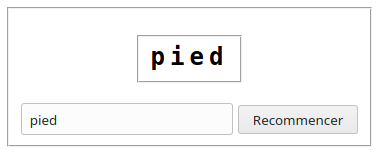
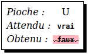
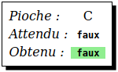
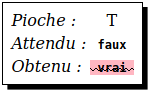

Le série d'exercices qui suit permet de programmer une version du jeu du pendu jouable sur smartphone, et qui ressemblera à ça :
Le professeur vous indiquera comment procéder pour lancer les exercices.
Se familiariser avec l'édition d'un fichier source, ainsi que le lancement et l'arrêt du jeu.
Ouvrir le fichier pendu.py. Il devrait avoir le contenu suivant :
La variable booléenne MONTRER_MOT_SECRET permet de configurer le jeu pour qu'il affiche le mot à deviner. Sans cette possibilité, il serait compliqué de tester le jeu pour vérifier s'il fonctionne correctement. On donnera à cette variable la valeur VRAI (ou True) tout au long du développement et de la mise au point du jeu, et FAUX (ou False) une fois que le jeu sera au point, pour que le mot à deviner ne soit plus affiché.
Nota : lancer l'exécution de ce fichier en l'état provoquera l'affichage d'un message d'erreur.
Écrire le contenu de la fonction choisirMot pour qu'elle retourne toujours la même chaîne de caractères contenant un mot.
Retourner un mot contenu dans une chaîne de caractères.

Recommencer et vérifier que les deux champs affichent le mot retourné par la fonction choisirMot ;Recommencer, et vérifier que les deux champs affiche le même mot que ci-dessus.Offrir la possibilité de définir le mot à deviner grâce au champs de saisie. C'est-à-dire que, lorsqu'on va cliquer sur le bouton Recommencer, c'est le texte contenu dans le champs de saisie qui va être utilisé comme mot à deviner, et donc affiché dans les deux champs.
a par un b ;suggestion dans la déclaration de la fonction choisirMot.Sachant que :
suggestion est une chaîne de caractères contenant ce qui a été saisi dans le champs de saisie ;modifier le code de la fonction choisirMot pour que :
suggestion est vide, elle retourne une chaîne de caractères contenant un mot quelconque, toujours le même (réutiliser le code écrit dans l'exercice précédent) ;suggestion n'est pas vide, elle retourne suggestion.Si
suggestionest vide
Retourner un mot quelconque
Sinon
Retournersuggestion
Le même que pour l'exercice précédent.
Recommencer alors que le champs de saisie est vide, c'est toujours le même mot qui doit être affiché dans les deux champs ;Recommencer alors que le champs de saisie n'est pas vide, alors c'est le contenu de ce champs qui doit être affiché dans les deux champs.Au lieu de toujours retourner le même mot lorsque le champs de saisie est vide, on va retourner un mot au hasard fournit par le système.
b par un c ;motAuHasard dans la déclaration de la fonction choisirMot.Sachant que :
suggestion est le contenu du champs de saisie ;motAuHasard est un mot choisi au hasard ;modifier la fonction choisirMot pour que :
suggestion est vide, elle retourne motAuHasard ;suggestion n'est pas vide, elle retourne suggestion.Si
suggestionest vide
RetournermotAuHasard
Sinon
Retournersuggestion
Le même que pour l'exercice précédent.
Les mêmes que pour l'exercice précédent, sauf que, lorsque le champs de saisie est vide, ce ne sera pas toujours le même mot qui sera affiché. Il se peut qu'un même mot soit affiché deux fois (ou plus) à la suite, mais c'est rare.
Détecter la présence d'une lettre dans un mot.
c par un d ;def lettreEstDansMot(lettre,mot): avant la dernière instruction du fichier.Sachant que :
lettre est la lettre choisie par le joueur ;mot est le mot à deviner ;écrire le code de la fonction lettreEstDansMot pour que :
lettre est présent dans mot, elle retourne VRAI (ou True) ;lettre n'est pas présent dans mot, elle retourne FAUX (ou False).Si
lettreest contenu dansmot
RetournerVRAI
Sinon
RetournerFAUX
Lorsque l'on lance le jeu, voilà ce qui est affiché :

lettreEstDansMot devrait retourner ;lettreEstDansMot retourne effectivement.Si l'utilisateur clique sur une lettre qui est contenue dans le mot, voici ce qui devrait s'afficher.

Si la fonction ne retourne pas la bonne valeur, et doit donc être corrigée, alors ceci s'affiche :

Si l'utilisateur clique sur une lettre qui n'est pas contenue dans le mot, voici ce qui devrait s'afficher :

Si la fonction ne retourne pas la bonne valeur, et doit donc être corrigée, alors ceci s'affiche :

Cliquer sur une lettre contenue dans le mot :
vrai ;vrai surligné en vert ;cliquer sur une lettre qui n'est pas contenue dans le mot :
faux ;faux surligné en vert.refaire les actions ci-dessus avec différentes lettres et différents mots.
Si ce qui est affiché dans Obtenu est barré et surligné de rouge, alors le code de la fonction lettreEstDansMot est incorrect. Noter le mot et le lettre qui posent problème, corriger la fonction, et ressayer le mot et la lettre pour vérifier que le bug a été corrigé.
Affichage du masque, c'est-à-dire du mot à deviner avec dissimulation des lettres qui n'ont pas encore encore été trouvées par le joueur.
d par un e ;def donnerMasque(mot,pioches): avant la dernière instruction du fichier.from workshop.fr.e import *
…
def lettreEstDansMot(lettre,mot):
…
def donnerMasque(mot,pioches):
go(globals())Sachant que :
mot est une chaîne de caractères contenant le mot à deviner ;pioches étant une chaîne de caractère contenant les lettres choisies par le joueur ;écrire le code de la fonction donnerMasque pour qu'elle retourne mot, mais dont les lettres qui ne sont pas contenus dans pioches sont remplacées par le caractère _.
Mettre une chaîne de caractères vide dans
masquePour
lettreétant chaque lettre dansmot
Silettreest danspioches
Ajouterlettreàmasque
Sinon
Ajouter le caractère_àmasqueRetourner
masque

Sachant que le contenu du masque est affiché dans le cadre au-dessus du clavier :
_ égal au nombre de caractères du mot à deviner ;Dessiner le corps du pendu en fonction du nombre d'erreurs, c'est-à-dire du nombre de lettres choisies par le joueur qui ne sont pas contenues dans le mot à deviner.
e par un f ;def majCorps(nombreErreurs) avant la dernière instruction du fichier.from workshop.fr.f import *
…
def donnerMasque(mot,pioches):
…
def majCorps(nombreErreurs):
go(globals())Sachant que :
nombreErreurs est le nombre d'erreurs commises par le joueur, c'est-à-dire le nombre de lettres qu'il a choisi est qui ne sont pas contenus dans le mot à deviner ;écrire le code de la fonction majCorps pour qu'elle dessine la partie du corps correspondant au nombre d'erreurs.
Pour cette tâche, utiliser la fonction dessinerPartieCorps qui peut prendre, comme paramètre, une des valeurs suivantes :
P_TETE # pour dessiner la tête,
P_TRONC # pour dessiner le tronc,
P_BRAS_GAUCHE # pour dessiner le bras gauche,
P_BRAS_DROIT # pour dessiner le bras droit,
P_PIED_GAUCHE # pour dessiner le pied gauche,
P_PIED_DROIT # pour dessiner le pied droit,
P_VISAGE # pour dessiner la visage.maj signifie mise-à-jour, car la fonction est appelée à chaque nouvelle erreur. Cela veut dire que la valeur du paramètre nombreErreurs est incrémenté d'un appel à l'autre. Aussi ne va-t-on pas redessiner tous le corps, mais juste la partie correspondant au nombre d'erreurs.
Si
nombreErreursest égal à 1
Dessiner la tête
Sinon sinombreErreursest égal à 2
Dessiner le tronc
Sinon sinombreErreurest égal à 3
Dessiner le bras gaucheet ainsi de suite pour dessiner le bras droit, le pied gauche, le pied droit et enfin le visage.